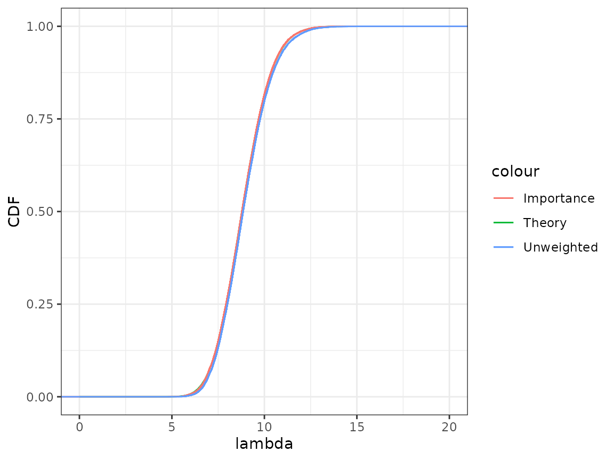

Tutorial 04: Uncertainty and integration (solutions)
Finn Lindgren
Source:vignettes/Tutorial04Solutions.Rmd
Tutorial04Solutions.RmdIntroduction
In this lab session you will explore
- using RMarkdown to organise text and code
- maximum likelihood estimator sampling distributions and approximate confidence interval construction
- Laplace approximation and importance sampling for approximate Bayesian credible interval construction
- Clone your
lab04-*repository from https://github.com/StatComp21/ either on your own computer (new Project from version control) or to https://rstudio.cloud - If on rstudio.cloud, setup
GITHUB_PATcredentials, like before. - Upgrade/install the
StatCompLabpackage, see https://finnlindgren.github.io/StatCompLab/ - The repository has two files,
RMDemo.Rmdandmy_code.R. Make a copy ofRMDemo.Rmd, and call itLab4.Rmd - During this lab, modify the
Lab4.Rmddocument and add new code and text commentary for the lab to the document. (You can remove the demonstration parts of the file when you don’t need them anymore, and/or keep a separate copy of it.) When pressing the “knit” button, the RMarkdown file will be run in its own R environment, so you need to include any neededlibrary()calls in a code chnk in the file, normally an initial “setup” chunk.
Three alternatives for Poisson parameter confidence intervals
Consider the Poisson model for observations \(\boldsymbol{y}=\{y_1,\dots,y_n\}\): \[ \begin{aligned} y_i & \sim \mathsf{Poisson}(\lambda), \quad\text{independent for $i=1,\dots,n$.} \end{aligned} \] that has joint probability mass function \[ p(\boldsymbol{y}|\lambda) = \exp(-n\lambda) \prod_{i=1}^n \frac{\lambda^{y_i}}{y_i!} \] In the week 4 lecture, two parameterisations were considered. We now add a third option:
- \(\theta = \lambda\), and \(\widehat{\theta}_\text{ML}=\frac{1}{n}\sum_{i=1}^n y_i = \overline{y}\)
- \(\theta = \sqrt{\lambda}\), and \(\widehat{\theta}_\text{ML}=\sqrt{\overline{y}}\)
- \(\theta = \log(\lambda)\), and \(\widehat{\theta}_\text{ML}=\log\left(\overline{y}\right)\)
From the week 4 lecture, we know that the inverse expected Fisher information is \(\lambda/n\) for case 1 and \(1/(4n)\) for case 2. For case 3, show that the inverse expected Fisher information is \(1/(n\lambda)\).
Solution:
For case 3, the negated log-likelihood is \[ \widetilde{l}(\theta) = n e^\theta - \theta \sum_{i=1}^n y_i + \text{constant} \] with 1st order derivative \[ \frac{\partial}{\partial\theta}\widetilde{l}(\theta) = n e^\theta - \sum_{i=1}^n y_i \] which shows that \(\widehat{\theta}_\text{ML}=\log(\overline{y})\), and 2nd order derivative \[ \frac{\partial^2}{\partial\theta^2}\widetilde{l}(\theta) = n e^\theta \] which is equal to \(n\lambda\) for all \(y_i\) values, so the inverse of the expected Hessian is \(1/(n\lambda)\).
Interval construction
Use the approximation method for large \(n\) from the lecture to construct approximate confidence intervals for \(\lambda\) using each of the three parameterisations. Define three functions, CI1, CI2, and CI3, each taking paramters
-
y: a vector of observed values -
alpha: the nominal error probability of the confidence intervals
To avoid having to specify alpha in a common case, you
can use alpha = 0.05 in the function argument definition to
set a default value.
The function pmax may be useful (see its help text).
Solution:
CI1 <- function(y, alpha = 0.05) {
n <- length(y)
lambda_hat <- mean(y)
theta_interval <-
lambda_hat - sqrt(lambda_hat / n) * qnorm(c(1 - alpha / 2, alpha / 2))
pmax(theta_interval, 0)
}
CI2 <- function(y, alpha = 0.05) {
n <- length(y)
theta_hat <- sqrt(mean(y))
theta_interval <-
theta_hat - 1 / sqrt(4 * n) * qnorm(c(1 - alpha / 2, alpha / 2))
pmax(theta_interval, 0)^2
}
CI3 <- function(y, alpha = 0.05) {
n <- length(y)
theta_hat <- log(mean(y))
theta_interval <-
theta_hat - 1 / sqrt(exp(theta_hat) * n) * qnorm(c(1 - alpha / 2, alpha / 2))
exp(theta_interval)
}You can use the following code to test your functions, storing each
interval as a row of a matrix with rbind (“bind” as “rows”,
see also cbind for combining columns):
## [1] 0 2 2 2 4
CI <- rbind(
"Method 1" = CI1(y),
"Method 2" = CI2(y),
"Method 3" = CI3(y)
)
colnames(CI) <- c("Lower", "Upper")We can print the result as a table in our RMarkdown by using a
separate codechunk, calling the knitr::kable function:
knitr::kable(CI)| Lower | Upper | |
|---|---|---|
| Method 1 | 0.7604099 | 3.239590 |
| Method 2 | 0.9524829 | 3.431663 |
| Method 3 | 1.0761094 | 3.717094 |
Will all three methods always produce a valid interval? Consider the
possible values of \(\overline{y}\).
Experiment with different values of n and
lambda in the simulation of y.
Solution:
When \(\overline{y}=0\), the first method produces a single point as “interval”.
The third method fails if \(\overline{y}=0\), due to log of zero.
This can happen when \(n\) or \(\lambda\) are close to zero.
For each approximate confidence interval construction method, we might ask the question of whether it fulfils the definition of an actual confidence interval construction method; that \(\mathsf{P}_{\boldsymbol{y}|\theta}(\theta\in \text{CI}(\boldsymbol{y})|\theta)\geq 1-\alpha\) for all \(\theta\) (or at least for a relevant subset of the parameter space). In coursework project 1, you will investigate the accuracy of some approximate confidence interval construction methods.
Bayesian credible intervals
Assume a true value of \(\lambda=10\), and simulate a sample of \(\boldsymbol{y}\) of size \(n=5\).
Solution:
n <- 5
lambda <- 10
y <- rpois(n, lambda)
y # Actual values will depend on if set.seed() was used at the beginning of the document## [1] 11 7 11 8 8Now consider a Bayesian version of the Poisson model, with prior model \[ \lambda \sim \mathsf{Exp}(a) \] that has probability density function \(p(\lambda) = a \exp(-a \lambda)\).
One can show that the exact posterior distribution for \(\lambda\) given \(\boldsymbol{y}\) is a \(\mathsf{Gamma}(1 + \sum_{i=1}^n y_i, a + n)\) distribution (using the shape&rate parameterisation), and credible intervals can be constructed from quantiles of this distribution.
In cases where the theoretical construction is impractical, an alternative is to instead construct samples from the posterior distribution, and extract empirical quantiles from this sample. Here, we will use importance sampling to achieve this.
Let \(\theta=\log(\lambda)\), so that \(\lambda=\exp(\theta)\). Show that the prior probability density for \(\theta\) is \(p(\theta)=a \exp\left( \theta-ae^\theta \right)\).
Gaussian approximation
Solution:
Alternative 1: From probability theory, we know that \(p(\theta)=p(\lambda) \frac{d\lambda(\theta)}{d\theta}\), so that \[ p(\theta) = a \exp(-a\lambda) \exp(\theta) = a \exp\left( \theta-ae^\theta \right) \]
Alternative 2: First, we derive the CDF: \(\mathsf{P}(\theta \leq x)=\mathsf{P}(\log(\lambda) \leq x)=\mathsf{P}(\lambda \leq e^x) = 1 - \exp(-a e^x)\), from the CDF for the Exponential distribution. Taking the derivative with respect to \(x\) gives the density \(p_\theta(x)=-\exp(-a e^x) \frac{d}{dx} (-a e^x) = \exp(-a e^x) (a e^x) = a \exp(x - a e^x)\), which is the needed result.
The posterior density function for \(\theta\) is \[ p(\theta|\boldsymbol{y}) = \frac{p(\theta) p(\boldsymbol{y}|\theta)}{p(\boldsymbol{y})} \] with log-density \[ \log p(\theta|\boldsymbol{y}) = \text{const} + \theta (1 + n\overline{y}) - (a+n)\exp(\theta) , \] and by taking derivatives we find the mode at \(\widetilde{\theta}=\log\left(\frac{1+n\overline{y}}{a+n}\right)\), and negated Hessian \(1+n\overline{y}\) at the mode.
With this information we can construct a Gaussian approximation to the posterior distribution, \(\widetilde{p}(\theta|\boldsymbol{y})\sim\mathsf{Normal}(\widetilde{\theta},\frac{1}{1+n\overline{y}})\).
Importance sampling
Simulate a sample \(\boldsymbol{x}=\{x_1,\dots,x_m\}\) from this Gaussian approximation of the posterior distribution, for some large \(m > 10000\), with hyperparameter \(a=1/5\).
Solution:
We need to calculate unnormalised importance weights \(w_k\), \(k=1,\dots,m\), \[ w_k = \left.\frac{p(\theta)p(\boldsymbol{y}|\theta)}{\widetilde{p}(\theta|\boldsymbol{y})}\right|_{\theta=x_k} . \] Due to lack of normalisation, these “raw” weights cannot be represented accurately in the computer. To get around that issue, first compute the logarithm of the weights, \(\log(w_k)\), and then new, equivalent unnormalised weights \(\widetilde{w}_k=\exp[\log(w_k) - \max_j \log(w_j)]\).
Solution:
log_weights <- (x * (1 + sum(y)) - (a + n) * exp(x)) -
dnorm(x, mean = log(1 + sum(y)) - log(a + n), sd = 1 / sqrt(1 + sum(y)), log = TRUE)
weights <- exp(log_weights - max(log_weights))Look at the help text for the function wquantile (in the
StatCompLab package, from version 0.4.0) that computes quantiles from a
weighted sample, and construct a 95% credible interval for \(\theta\) using the \(\boldsymbol{x}\) sample and associate
weights, and then transform it into a credible interval for \(\lambda\)
Solution:
## [1] 1.873696 2.448506
lambda_interval <- exp(theta_interval)
lambda_interval## [1] 6.512323 11.571043Cumulative distribution function comparison
With ggplot, use geom_function to plot the
theoretical posterior cumulative distribution function for \(\lambda\) (the CDF from the Gamma
distribution given above, see pgamma()) and compare it to
the approximation given by the importance sampling. The
stat_ewcdf() function from the StatCompLab should be used
to plot the cdf for the weighted sample \(\lambda_k=\exp(x_k)\), with (unnormalised)
weights \(w_k\). Also include the
unweighted sample, with stat_ecwf(). How close does the
approximations come to the true posterior distribution?
Solution:
The importance sampling version is virtually indistinguishable from the true posterior distribution. The unweighted sample is very close to the true posterior distribution; for this model, the Gaussian approximation of the posterior distribution of \(\log(\lambda)\) is an excellent approximation even before we add the importance sampling step.
ggplot(data.frame(lambda = exp(x), weights = weights)) +
xlim(0, 20) + ylab("CDF") +
geom_function(fun = pgamma, args = list(shape = 1 + sum(y), rate = a + n),
mapping = aes(col = "Theory")) +
stat_ewcdf(aes(lambda, weights = weights, col = "Importance")) +
stat_ecdf(aes(lambda, col = "Unweighted"))